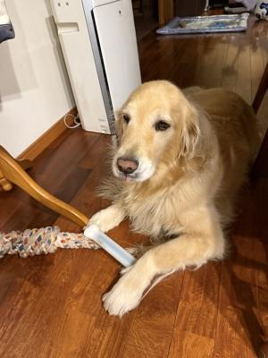

「なに」に価値を見出すか ?
自分が10代後半から20代を過ごした時代は、物質的な豊かさが
富の象徴とされてた、と記憶しています。
どんどん消費することが「良いこと」って、みんな思っていたし、
欲しいものがさっと手に入れられることが幸せだと思っていました。
若ければ物欲もそれなりに強いし(笑)、
ワタクシも人並みにはステイタスシンボル的なものを持っていたと思います。
その後、「シンプルに暮らしたい〜。」とか(笑)言い出したのは
いくつくらいになった頃からでしょうかね ?
もう、今じゃ「モノはいらん。」ってなっちゃってます・・・ほほほ。
あ、「モノ」って、自分に必要がないと思われるモノってことね(笑)。
「地の時代が終わり、風の時代に入って行く。」
とか・・・言われ始めたのは数年前だったでしょうか。
その当時は「なんのこっちゃ」って思ってたんだけどね・・・
人間って、上手に言い訳っていうの ?後からこじつけの理由をくっつけるなぁ
・・・って。
ただし、ちょうど心情的に変化の時期と重なったってこともあってか、
ちょっと納得しちゃうところもあって。
「物質から自由になろう」とか「モノよりも体験に価値を置く」とか・・・
なんか、いかにも自由で風のように軽やかなイメージじゃんね(笑)。
視覚的に入ってくる情報で、疲れ果ててるって自覚があったので、
目の前の「いらない」と思うものをどんどん片付け始めたのも、
多分ここ10年くらいだったと思うんだけど、片付ければ片付けるほど、
「これはもう必要ないよね。」って感覚がクリアになっていったのね。
「なくなる」って思うと不安だったものも、片付けてしまったら意外と
困らないもんなんだって、成功体験が積み上がって行ったんだと思います(笑)。
そんなマインドで過ごしているワタクシも、「片付けの鉄則」は、
一応(若干ゆるめだけど 笑)守っておりまして・・・
それは、「自分のモノ以外は勝手に片付けない。」ってことですの。
幸い ? 我が家は「収納をありったけ作って ! 」とお願いして作ってもらったので
仕舞い込む場所だけはいっぱいあります。
捨てられない病を発症しております( ? )ダンナ氏のモノは、
もー、収納の中に山ほど・・・
我が家のウォークインクローゼット、中身の3分の2がダンナ氏のお洋服〜(笑)。
でも、そんなこと言ってるワタクシだって、若い頃は物欲多め女子だったので
「なんで、こんなもん買ったんよ。」ってものが、
未だにいろんな所から出てくる訳よ(汗)。
ぶっちゃけ、ひとのことなんかかまってる暇はないんだよー(笑)。
・・・なんですが、
今朝のダンナ氏の発言に思わず「なんで ? 」と尋ね返してしまった・・・。
「このロングコート、安くなってるから買おうと思う〜。」
って・・・「安くなってるから ?? 」っすか ???(汗)
さらに見ると、割とフォーマルっぽいスタイルの膝丈くらいのコートで、
多分、着用を想定すると・・・
電車とかで通勤して、外も歩くスーツ着用の職業の人が着る感じのコート、
なんだよねぇ(笑)。
・・・あんたそのコートいつ着るんよ ??? (爆)
それ・・・安いからいいやん、って話じゃないと思うんよ ?
明らかに「不必要なモノ」を買おうとしてるやん(私の価値観的には)。
もっと軽やかに生きた方が楽だと思うんだけどなぁ(爆)。
まぁ、それでも以前よりはだいぶ柔軟になって来てるところもあるんだけどね。
それは食材、なんだけど、・・・
以前は特定の食材が「ない」ってなったら、絶対買いに走ってたもん。
最近は「なんか別のもので代用」するか、「ないならしょーがないか。」
ってなってます(笑)。
それだけでもずいぶんな進歩( ? )だなっ !
ちょっとずつ・・・
多分、ちょこっとずつでも前に進んでいけばおっけーだよね !

ひましゃんは、じぶんでゆーのもなんでしゅが、
いろんなものにきょーみがあるでしゅ。
ちょこっときになると、しゅぐおくちにいれてかみかみしたくなるでしゅ。
しょんで、かみかみしたらごっくんしゅる・・・と、ママにおこられるでしゅ。
んー・・・、でも、がまんはむじゅかしーでしゅよ・・・